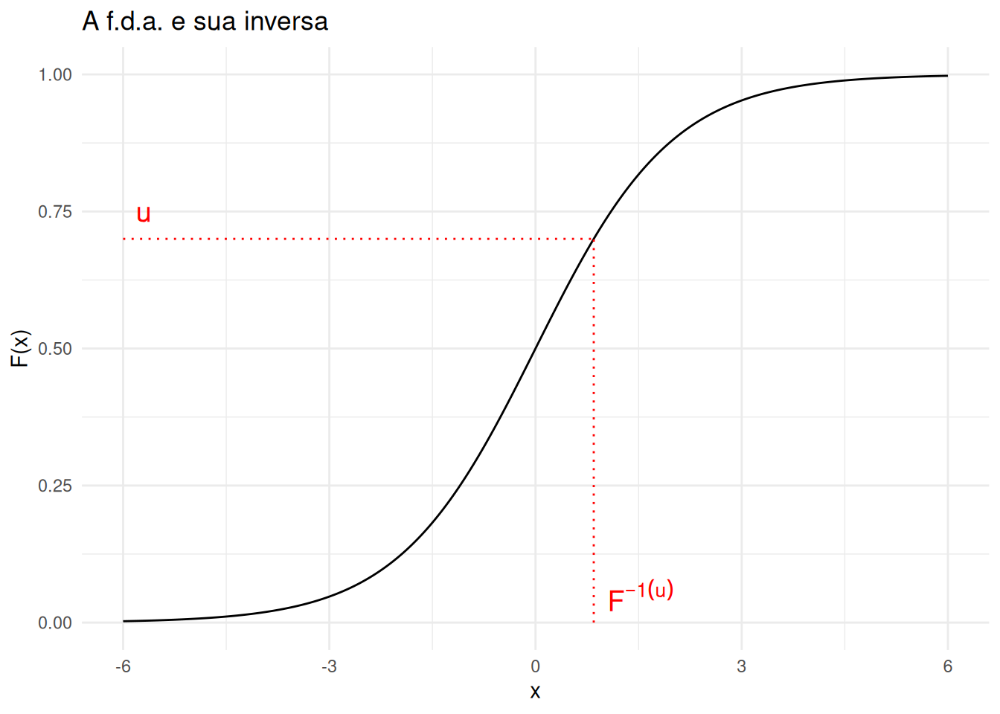
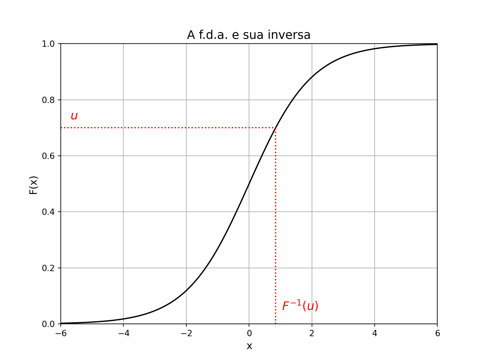
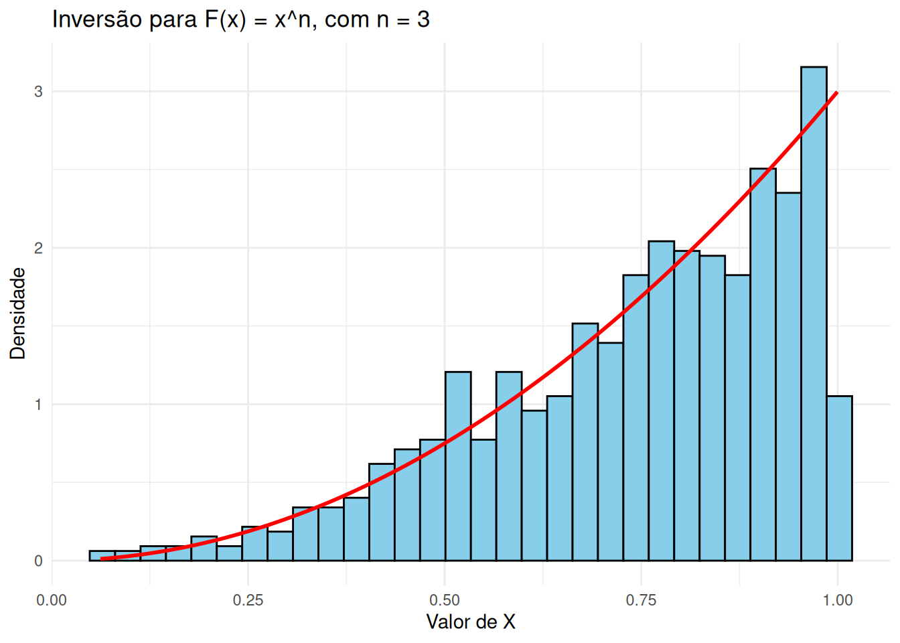
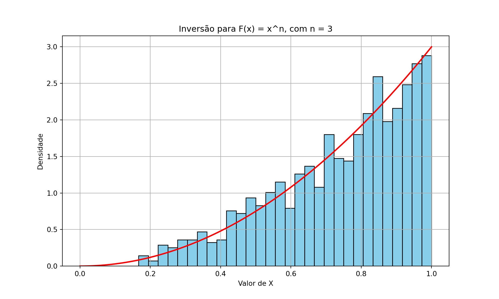
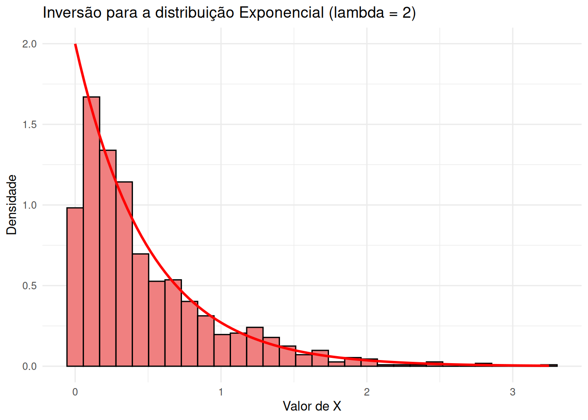
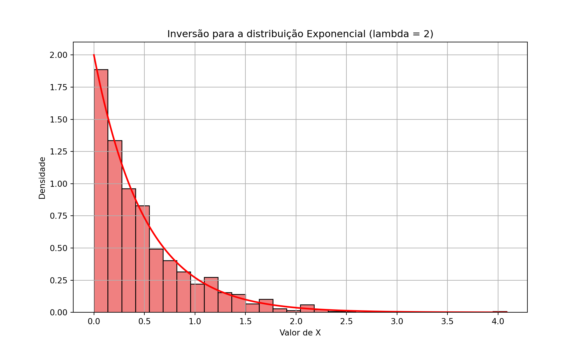
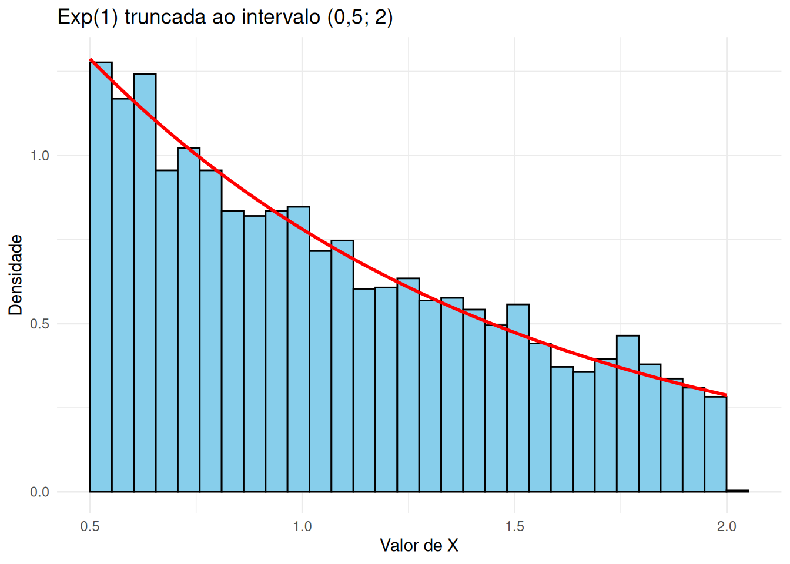
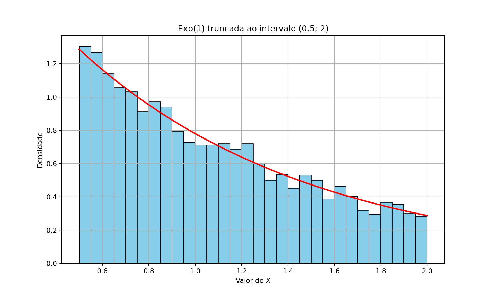
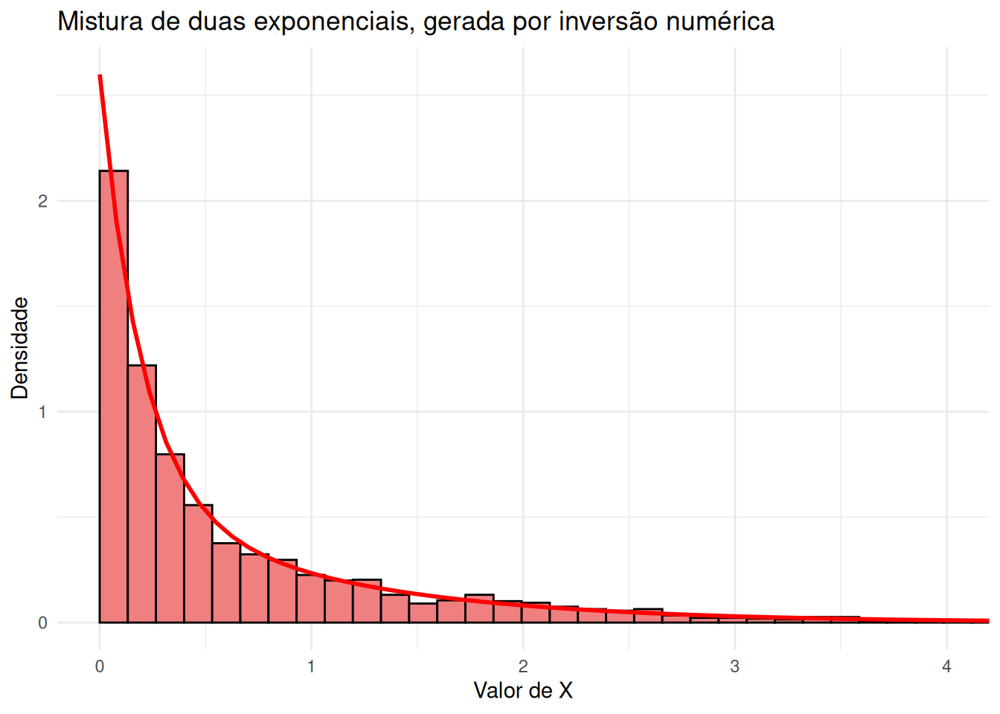
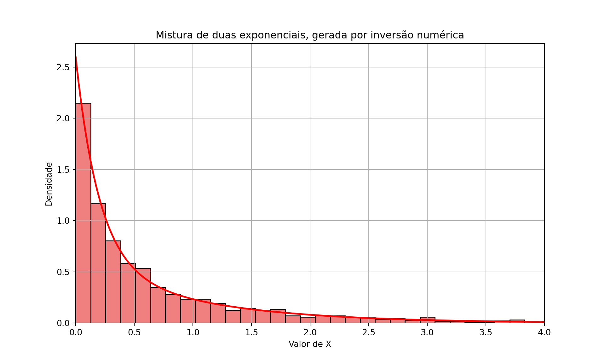

No capítulo anterior usamos a f.d.a. para transformar um número \(\text{Unif}(0,1)\) em uma v.a. discreta. A ideia agora é exatamente a mesma, mas o caso contínuo é até mais simples: como não há saltos na f.d.a., não precisamos percorrer valores acumulando probabilidades — quando conseguimos inverter \(F\) explicitamente, cada valor gerado sai de uma única conta.
Lembre que uma v.a. \(X\) é contínua quando sua função de distribuição acumulada (f.d.a.) pode ser escrita como
\[
\mathbb{P}(X \leq a) = F(a) = \int_{-\infty}^{a} f(x)\, dx, \quad \forall a \in \mathbb{R},
\]
em que \(f: \mathbb{R} \to [0, \infty)\) é uma função integrável, chamada de função densidade de probabilidade.
4.1 A inversa da f.d.a. no caso contínuo
Quando \(X\) é contínua, \(F\) é uma função contínua: ela não dá saltos. Se, além disso, \(F\) for estritamente crescente no intervalo onde a densidade é positiva, então para cada \(u \in (0,1)\) existe um único\(x\) com \(F(x) = u\). Nesse caso, \(F^{-1}\) é a função inversa no sentido usual, e a definição geral vista no capítulo anterior, \(F^{-1}(u) = \inf\{x \in \mathbb{R}: F(x) \geq u\}\), coincide com ela.
Atenção: contínua não quer dizer estritamente crescente
Uma f.d.a. contínua pode ser constante em um trecho: basta que a densidade seja zero ali. Por exemplo, se \(f\) é positiva em \((0,1) \cup (2,3)\) e nula em \([1,2]\), então \(F\) é constante em \([1,2]\) e não é injetora na reta toda.
Isso não atrapalha o método: \(F\) continua estritamente crescente no suporte de \(X\), que é o único lugar de onde o algoritmo devolve valores. Em todos os exemplos deste capítulo o suporte é um intervalo e \(F\) é estritamente crescente nele, então podemos tratar \(F^{-1}\) como a inversa usual.
A figura a seguir ilustra a relação entre \(F\) e \(F^{-1}\): entramos pelo eixo vertical com um valor \(u\), caminhamos até a curva e descemos até o eixo horizontal, chegando em \(F^{-1}(u)\).
library(ggplot2)# f.d.a. usada como ilustração: a logísticaF_ac <-function(x) {1/ (1+exp(-x))}# Inversa da f.d.a. logística, obtida resolvendo u = 1 / (1 + e^{-x}) em xF_inv <-function(u) {-log(1/ u -1)}# Malha de pontos usada para desenhar a curvax <-seq(-6, 6, length.out =400)# Valor de u escolhido para ilustrar o caminho u -> F^{-1}(u)u_valor <-0.7x_valor <-F_inv(u_valor)df <-data.frame(x = x, F_x =F_ac(x))ggplot(df, aes(x = x, y = F_x)) +geom_line(color ="black") +# Segmento horizontal: entramos com u pelo eixo vertical até tocar a curvaannotate("segment", x =-6, xend = x_valor, y = u_valor, yend = u_valor,linetype ="dotted", color ="red") +# Segmento vertical: descemos da curva até o eixo horizontalannotate("segment", x = x_valor, xend = x_valor, y =0, yend = u_valor,linetype ="dotted", color ="red") +annotate("text", x = x_valor +0.2, y =0.05, label ="F^{-1}(u)",parse =TRUE, color ="red", hjust =0, size =5) +annotate("text", x =-5.7, y = u_valor +0.05, label ="u",color ="red", size =5) +labs(title ="A f.d.a. e sua inversa", x ="x", y ="F(x)") +ylim(0, 1) +theme_minimal()

Mostrar código
import numpy as npimport matplotlib.pyplot as plt# f.d.a. usada como ilustração: a logísticadef F_ac(x):return1/ (1+ np.exp(-x))# Inversa da f.d.a. logística, obtida resolvendo u = 1 / (1 + e^{-x}) em xdef F_inv(u):return-np.log(1/ u -1)# Malha de pontos usada para desenhar a curvax = np.linspace(-6, 6, 400)# Valor de u escolhido para ilustrar o caminho u -> F^{-1}(u)u_valor =0.7x_valor = F_inv(u_valor)plt.figure(figsize=(8, 6))plt.plot(x, F_ac(x), color="black")# Segmento horizontal: entramos com u pelo eixo vertical até tocar a curvaplt.hlines(u_valor, -6, x_valor, linestyles="dotted", colors="red")# Segmento vertical: descemos da curva até o eixo horizontalplt.vlines(x_valor, 0, u_valor, linestyles="dotted", colors="red")plt.text(x_valor +0.2, 0.05, r"$F^{-1}(u)$", fontsize=14, color="red")plt.text(-5.7, u_valor +0.03, r"$u$", fontsize=14, color="red")plt.title("A f.d.a. e sua inversa", fontsize=14)plt.xlabel("x", fontsize=12)plt.ylabel("F(x)", fontsize=12)plt.ylim(0, 1)
(0.0, 1.0)
Mostrar código
plt.xlim(-6, 6)
(-6.0, 6.0)
Mostrar código
plt.grid(True)plt.show()

4.2 Método da Inversão
Pseudo-algoritmo: inversão para v.a. contínuas
Gere \(U \sim \text{Unif}(0,1)\).
Retorne \(X = F^{-1}(U)\).
Compare com o caso discreto: lá o passo 2 era uma busca (percorrer os valores até que a acumulada alcançasse \(U\)); aqui ele é uma fórmula. Em compensação, precisamos conseguir escrever \(F^{-1}\) explicitamente — voltaremos a esse ponto no fim da seção.
Proposição
Seja \(F\) a f.d.a. de uma v.a. contínua, estritamente crescente em seu suporte, e seja \(F^{-1}\) sua inversa. Se \(U \sim \text{Unif}(0,1)\), então
\[
X = F^{-1}(U)
\]
tem f.d.a. \(F\).
Demonstração
Fixe \(x \in \mathbb{R}\). Como \(F\) é crescente, aplicar \(F\) aos dois lados de uma desigualdade preserva o seu sentido, e portanto
\[
F^{-1}(U) \leq x
\quad \Longleftrightarrow \quad
F(F^{-1}(U)) \leq F(x)
\quad \Longleftrightarrow \quad
U \leq F(x),
\]
onde na última equivalência usamos que \(F(F^{-1}(u)) = u\). Os dois eventos são o mesmo, logo têm a mesma probabilidade:
Falta calcular essa última probabilidade. Como \(U \sim \text{Unif}(0,1)\), sua f.d.a. é \(\mathbb{P}(U \leq u) = u\) para todo \(u \in [0,1]\). E \(F(x)\) é um número em \([0,1]\), por ser uma probabilidade. Portanto,
\[
\mathbb{P}(U \leq F(x)) = F(x).
\]
Ou seja, \(\mathbb{P}(X \leq x) = F(x)\) para todo \(x\), que é exatamente o que queríamos. \(\square\)
Vale a pena entender também por que o método funciona, e não só verificar a conta. A f.d.a. transforma “quanta probabilidade existe” em “até onde vamos no eixo \(x\)”: um pedaço de comprimento \(p\) do eixo vertical é levado pela inversa em uma região do eixo \(x\) que tem probabilidade exatamente \(p\). Onde a densidade é alta, \(F\) sobe rápido, e um intervalo curto de \(x\) corresponde a um intervalo longo de \(u\) — por isso muitos dos \(U\) sorteados caem ali e são convertidos em valores dessa região.
4.3 Exemplo 1: uma potência
Seja \(X\) uma v.a. com f.d.a.
\[
F(x) = x^n, \quad \text{para } 0 < x < 1,
\]
em que \(n\) é um inteiro positivo conhecido. A densidade correspondente é \(f(x) = F'(x) = n x^{n-1}\), para \(0 < x < 1\).
Para obter a inversa, escrevemos \(u = F(x)\) e isolamos \(x\):
\[
u = x^n \implies x = u^{1/n}.
\]
Pseudo-algoritmo
Gere \(U \sim \text{Unif}(0,1)\).
Retorne \(X = U^{1/n}\).
No código abaixo geramos \(B = 1000\) valores e comparamos o histograma com a densidade \(f(x) = n x^{n-1}\), em vermelho. Usamos a letra \(B\) para o número de valores simulados, reservando \(n\) para o parâmetro da distribuição.
library(ggplot2)set.seed(42)n <-3# expoente da f.d.a. F(x) = x^nB <-1000# quantos valores queremos gerar# Passo 1: gerar os uniformesU <-runif(B, min =0, max =1)# Passo 2: aplicar a inversa da f.d.a., F^{-1}(u) = u^{1/n}X <- U^(1/ n)df <-data.frame(X = X)# O histograma usa a escala de densidade (e não de contagem) para poder ser# comparado com a densidade teórica, desenhada por stat_functionggplot(df, aes(x = X)) +geom_histogram(aes(y =after_stat(density)), bins =30,fill ="skyblue", color ="black") +stat_function(fun =function(x) n * x^(n -1), color ="red", linewidth =1) +labs(title ="Inversão para F(x) = x^n, com n = 3",x ="Valor de X", y ="Densidade") +theme_minimal()

Mostrar código
import numpy as npimport matplotlib.pyplot as pltnp.random.seed(42)n =3# expoente da f.d.a. F(x) = x^nB =1000# quantos valores queremos gerar# Passo 1: gerar os uniformesU = np.random.uniform(0, 1, B)# Passo 2: aplicar a inversa da f.d.a., F^{-1}(u) = u^{1/n}X = U**(1/ n)# Malha usada só para desenhar a densidade teóricagrade = np.linspace(0, 1, 200)# O histograma usa a escala de densidade (density=True) para poder ser# comparado com a densidade teóricaplt.figure(figsize=(10, 6))plt.hist(X, bins=30, color='skyblue', edgecolor='black', density=True)plt.plot(grade, n * grade**(n -1), color='red', linewidth=2)plt.title('Inversão para F(x) = x^n, com n = 3')plt.xlabel('Valor de X')plt.ylabel('Densidade')plt.grid(True)plt.show()

4.4 Exemplo 2: distribuição exponencial
Seja \(X \sim \text{Exp}(\lambda)\), cuja f.d.a. é
library(ggplot2)set.seed(42)lambda <-2# parâmetro da distribuição exponencialB <-1000# quantos valores queremos gerar# Passo 1: gerar os uniformesU <-runif(B, min =0, max =1)# Passo 2: aplicar a inversa da f.d.a. da exponencialX <--log(1- U) / lambdadf <-data.frame(X = X)# Comparação com a densidade teórica f(x) = lambda * e^{-lambda x}ggplot(df, aes(x = X)) +geom_histogram(aes(y =after_stat(density)), bins =30,fill ="lightcoral", color ="black") +stat_function(fun =function(x) lambda *exp(-lambda * x),color ="red", linewidth =1) +labs(title ="Inversão para a distribuição Exponencial (lambda = 2)",x ="Valor de X", y ="Densidade") +theme_minimal()

Mostrar código
import numpy as npimport matplotlib.pyplot as pltnp.random.seed(42)lambd =2# parâmetro da distribuição exponencialB =1000# quantos valores queremos gerar# Passo 1: gerar os uniformesU = np.random.uniform(0, 1, B)# Passo 2: aplicar a inversa da f.d.a. da exponencialX =-np.log(1- U) / lambd# Malha usada só para desenhar a densidade teóricagrade = np.linspace(0, max(X), 200)# Comparação com a densidade teórica f(x) = lambda * e^{-lambda x}plt.figure(figsize=(10, 6))plt.hist(X, bins=30, color='lightcoral', edgecolor='black', density=True)plt.plot(grade, lambd * np.exp(-lambd * grade), color='red', linewidth=2)plt.title('Inversão para a distribuição Exponencial (lambda = 2)')plt.xlabel('Valor de X')plt.ylabel('Densidade')plt.grid(True)plt.show()

Uma simplificação comum
Se \(U \sim \text{Unif}(0,1)\), então \(1 - U\) também tem distribuição \(\text{Unif}(0,1)\). Por isso muitos textos escrevem o algoritmo da exponencial como \(X = -\log(U)/\lambda\): a distribuição gerada é a mesma. Neste livro mantemos o \(1 - U\), que é o que sai diretamente da inversão de \(F\).
Atenção: nem sempre dá para inverter \(F\) na mão
Os dois exemplos acima têm f.d.a. que conseguimos inverter com álgebra simples. Isso é a exceção, não a regra: para a distribuição normal, por exemplo, nem mesmo \(F\) tem fórmula fechada, quanto mais \(F^{-1}\). Nesses casos, ou usamos uma aproximação numérica de \(F^{-1}\) — como no Exemplo 4 —, ou trocamos de método — é o que faremos nos capítulos sobre o método da rejeição e sobre o algoritmo de Box-Muller.
4.5 Exemplo 3: distribuições truncadas
É comum precisarmos de uma variável restrita a um intervalo: o tempo de espera de quem já esperou pelo menos um minuto, o salário de quem ganha acima de um piso, a temperatura de um dia em que ela ficou entre dois valores. A distribuição correspondente é a distribuição truncada.
Restringir não é simplesmente ignorar o que está fora do intervalo: a densidade precisa ser reescalonada, para que continue integrando 1 na região que sobrou.
Definição: distribuição truncada
Seja \(X\) uma v.a. contínua com densidade \(f\) e f.d.a. \(F\), e seja \((a,b)\) um intervalo com \(F(b) > F(a)\). A distribuição de \(X\)truncada a \((a,b)\) é a distribuição condicional de \(X\) dado \(a < X < b\); sua densidade é
\[
f_{a,b}(x) = \frac{f(x)}{F(b) - F(a)}, \qquad a < x < b,
\]
e sua f.d.a. é
\[
F_{a,b}(x) = \frac{F(x) - F(a)}{F(b) - F(a)}, \qquad a < x < b.
\]
O denominador \(F(b) - F(a) = \mathbb{P}(a < X < b)\) é a probabilidade que “sobra” depois do truncamento. Dividir por ele é o que devolve à densidade a área total igual a 1.
O ponto importante é que, se sabemos inverter \(F\), sabemos inverter \(F_{a,b}\) também — sem nenhum trabalho novo.
onde na última passagem aplicamos \(F^{-1}\) aos dois lados. \(\square\)
Pseudo-algoritmo: distribuição truncada a \((a,b)\)
Gere \(U \sim \text{Unif}(0,1)\).
Calcule \(V = F(a) + U\,[F(b) - F(a)]\).
Retorne \(X = F^{-1}(V)\).
Vale a pena ler o passo 2 geometricamente: \(V\) é uma uniforme no intervalo \((F(a), F(b))\), isto é, um sorteio da “altura” dentro da faixa da f.d.a. que corresponde a \((a,b)\). O passo 3 então converte essa altura em um valor de \(x\), exatamente como na inversão comum. A diferença é só que agora sorteamos a altura em uma faixa, e não em \((0,1)\) inteiro.
Vamos aplicar isso a uma \(\text{Exp}(1)\) truncada ao intervalo \((0{,}5;\ 2)\). Como \(F(x) = 1 - e^{-x}\) e \(F^{-1}(u) = -\log(1-u)\), os dois passos são contas diretas.
library(ggplot2)set.seed(42)lambda <-1# parâmetro da exponencial originala <-0.5# extremo inferior do truncamentob <-2# extremo superior do truncamentoB <-5000# quantos valores queremos gerar# f.d.a. da exponencial e sua inversa, do Exemplo 2F_exp <-function(x) 1-exp(-lambda * x)F_inv_exp <-function(u) -log(1- u) / lambda# Passo 1: gerar os uniformesU <-runif(B, min =0, max =1)# Passo 2: levar U para a faixa (F(a), F(b)) da f.d.a.V <-F_exp(a) + U * (F_exp(b) -F_exp(a))# Passo 3: aplicar a inversa da f.d.a. originalX <-F_inv_exp(V)cat("Menor valor gerado:", round(min(X), 4), "\n")
Menor valor gerado: 0.5002
Mostrar código
cat("Maior valor gerado:", round(max(X), 4), "\n")
Maior valor gerado: 1.9994
Mostrar código
# A constante que reescalona a densidadeconstante <-F_exp(b) -F_exp(a)cat("P(a < X < b) na exponencial original:", round(constante, 4), "\n")
P(a < X < b) na exponencial original: 0.4712
Mostrar código
df <-data.frame(X = X)# A densidade teórica é a da exponencial dividida pela constante, e existe# apenas dentro do intervalo (a, b) — daí o argumento xlim de stat_functionggplot(df, aes(x = X)) +geom_histogram(aes(y =after_stat(density)), bins =30, boundary = a,fill ="skyblue", color ="black") +stat_function(fun =function(x) lambda *exp(-lambda * x) / constante,xlim =c(a, b), color ="red", linewidth =1) +labs(title ="Exp(1) truncada ao intervalo (0,5; 2)",x ="Valor de X", y ="Densidade") +theme_minimal()

Mostrar código
import numpy as npimport matplotlib.pyplot as pltnp.random.seed(42)lambd =1# parâmetro da exponencial originala =0.5# extremo inferior do truncamentob =2# extremo superior do truncamentoB =5000# quantos valores queremos gerar# f.d.a. da exponencial e sua inversa, do Exemplo 2def F_exp(x):return1- np.exp(-lambd * x)def F_inv_exp(u):return-np.log(1- u) / lambd# Passo 1: gerar os uniformesU = np.random.uniform(0, 1, B)# Passo 2: levar U para a faixa (F(a), F(b)) da f.d.a.V = F_exp(a) + U * (F_exp(b) - F_exp(a))# Passo 3: aplicar a inversa da f.d.a. originalX = F_inv_exp(V)print("Menor valor gerado:", round(X.min(), 4))
Menor valor gerado: 0.5
Mostrar código
print("Maior valor gerado:", round(X.max(), 4))
Maior valor gerado: 1.999
Mostrar código
# A constante que reescalona a densidadeconstante = F_exp(b) - F_exp(a)print("P(a < X < b) na exponencial original:", round(constante, 4))
P(a < X < b) na exponencial original: 0.4712
Mostrar código
# Malha usada só para desenhar a densidade teórica, que só existe em (a, b)grade = np.linspace(a, b, 200)plt.figure(figsize=(10, 6))plt.hist(X, bins=30, color='skyblue', edgecolor='black', density=True)plt.plot(grade, lambd * np.exp(-lambd * grade) / constante, color='red', linewidth=2)plt.title('Exp(1) truncada ao intervalo (0,5; 2)')plt.xlabel('Valor de X')plt.ylabel('Densidade')plt.grid(True)plt.show()

Todos os valores gerados caem dentro de \((0{,}5;\ 2)\), e o histograma acompanha a densidade reescalonada. Note que, na exponencial original, apenas 47% da massa está nesse intervalo — é por isso que a densidade truncada é pouco mais que o dobro da original em cada ponto.
Atenção: dois caminhos que parecem equivalentes
Diante de “quero uma exponencial entre \(0{,}5\) e \(2\)”, duas outras ideias costumam aparecer.
A primeira é substituir pelos extremos os valores que caem fora do intervalo (o que em programação se chama clamp). Isso está errado: o resultado tem massa de probabilidade concentrada exatamente em \(0{,}5\) e em \(2\), e portanto não é sequer uma distribuição contínua.
A segunda é descartar os valores que caem fora, gerando novos até que um caia dentro. Esse caminho está correto — é um caso do método da rejeição, do Capítulo 6 — mas desperdiça trabalho: aqui, mais da metade dos valores gerados seria jogada fora. E o desperdício piora quanto mais raro for o intervalo: para gerar uma normal padrão truncada a \((4{,}5;\ \infty)\), como será preciso no Capítulo 11, seriam necessários cerca de 300 mil valores descartados para cada um aproveitado. Já a inversão do pseudo-algoritmo acima gasta exatamente um uniforme por valor gerado, seja qual for o intervalo.
4.6 Exemplo 4: quando não há fórmula para a inversa
Nos exemplos anteriores, \(F^{-1}\) saía com duas linhas de álgebra. Este exemplo trata do caso mais comum na prática: \(F\) é conhecida, mas a equação \(F(x) = u\) não tem solução em forma fechada.
Considere um lote de componentes eletrônicos formado por dois tipos: uma fração \(p\) vem de uma linha de produção defeituosa, com tempo de vida \(\text{Exp}(\lambda_1)\), e o restante de uma linha boa, com tempo de vida \(\text{Exp}(\lambda_2)\). Sorteando um componente ao acaso, seu tempo de vida \(X\) tem densidade
envolve duas exponenciais com expoentes diferentes e não pode ser resolvida em \(x\) com as funções usuais. A saída é resolvê-la numericamente, para cada valor de \(u\) sorteado.
Pseudo-algoritmo: inversão numérica
Entrada: a f.d.a. \(F\) e um intervalo \([0, L]\) que certamente contém a solução.
Gere \(U \sim \text{Unif}(0,1)\).
Encontre numericamente a raiz \(x\) da equação \(F(x) - U = 0\) no intervalo \([0, L]\).
Retorne \(x\).
O passo 2 é resolvido por uma função pronta: uniroot no R e brentq (do scipy.optimize) no Python. As duas procuram uma raiz dentro de um intervalo em que a função troca de sinal, o que aqui é automático: \(F(0) - U = -U < 0\) e \(F(L) - U \approx 1 - U > 0\), desde que \(L\) seja grande.
library(ggplot2)set.seed(42)p <-0.6# proporção de componentes da linha defeituosalambda1 <-1# taxa dessa linha (vida curta)lambda2 <-5# taxa da linha boaB <-2000# quantos valores queremos gerar# f.d.a. da mistura. Note que não escrevemos F^{-1}: ela não existe em forma# fechada, e é justamente esse o ponto do exemploF_mistura <-function(x) 1- p *exp(-lambda1 * x) - (1- p) *exp(-lambda2 * x)# Passo 1: gerar os uniformesU <-runif(B, min =0, max =1)# Passos 2 e 3: uma busca numérica para cada valor gerado.# tol controla a precisão da raiz; o padrão de uniroot é bem mais frouxoX <-numeric(B)for (i in1:B) { X[i] <-uniroot(function(x) F_mistura(x) - U[i],interval =c(0, 50), tol =1e-10)$root}cat("Média amostral:", round(mean(X), 4), "\n")
df <-data.frame(X = X)f_mistura <-function(x) { p * lambda1 *exp(-lambda1 * x) + (1- p) * lambda2 *exp(-lambda2 * x)}# coord_cartesian apenas aproxima o gráfico da região onde está quase toda a# massa; nenhum valor é descartado do histogramaggplot(df, aes(x = X)) +geom_histogram(aes(y =after_stat(density)), bins =60, boundary =0,fill ="lightcoral", color ="black") +stat_function(fun = f_mistura, color ="red", linewidth =1) +coord_cartesian(xlim =c(0, 4)) +labs(title ="Mistura de duas exponenciais, gerada por inversão numérica",x ="Valor de X", y ="Densidade") +theme_minimal()

Mostrar código
import numpy as npimport matplotlib.pyplot as pltfrom scipy.optimize import brentqnp.random.seed(42)p =0.6# proporção de componentes da linha defeituosalambda1 =1# taxa dessa linha (vida curta)lambda2 =5# taxa da linha boaB =2000# quantos valores queremos gerar# f.d.a. da mistura. Note que não escrevemos F^{-1}: ela não existe em forma# fechada, e é justamente esse o ponto do exemplodef F_mistura(x):return1- p * np.exp(-lambda1 * x) - (1- p) * np.exp(-lambda2 * x)# Passo 1: gerar os uniformesU = np.random.uniform(0, 1, B)# Passos 2 e 3: uma busca numérica para cada valor geradoX = np.zeros(B)for i inrange(B): X[i] = brentq(lambda x: F_mistura(x) - U[i], 0, 50)print("Média amostral:", round(X.mean(), 4))
# Malha usada só para desenhar a densidade teóricagrade = np.linspace(0, X.max(), 300)f_mistura = (p * lambda1 * np.exp(-lambda1 * grade) + (1- p) * lambda2 * np.exp(-lambda2 * grade))# plt.xlim apenas aproxima o gráfico da região onde está quase toda a massa;# nenhum valor é descartado do histogramaplt.figure(figsize=(10, 6))plt.hist(X, bins=60, color='lightcoral', edgecolor='black', density=True)plt.plot(grade, f_mistura, color='red', linewidth=2)plt.xlim(0, 4)
(0.0, 4.0)
Mostrar código
plt.title('Mistura de duas exponenciais, gerada por inversão numérica')plt.xlabel('Valor de X')plt.ylabel('Densidade')plt.grid(True)plt.show()

O método funciona, mas cobra um preço: em vez de uma conta, cada valor gerado exige uma busca, que por sua vez avalia \(F\) várias vezes. Gerar um milhão de valores por esse caminho é bem mais lento do que pela fórmula do Exemplo 2.
Atenção: o intervalo de busca
A busca numérica só encontra a raiz se ela estiver dentro do intervalo fornecido. Usamos \([0, 50]\) porque \(F(50)\) é indistinguível de 1, mas isso não é uma garantia universal: se algum \(U\) sorteado for maior que \(F(L)\), a função não troca de sinal no intervalo e o programa devolve um erro em vez de um número.
Quanto mais valores forem gerados, maior o \(U\) máximo sorteado, e maior precisa ser \(L\). É um cuidado que a inversão com fórmula fechada simplesmente não exige.
Vale registrar que, neste exemplo específico, existe um caminho muito melhor. A densidade \(f\) é uma média ponderada de duas densidades exponenciais, e uma variável com essa estrutura pode ser gerada em dois passos — sorteia-se de qual das duas linhas de produção veio o componente e, depois, gera-se a exponencial correspondente por inversão. Nenhuma busca numérica é necessária. Esse é o método da composição, que veremos no capítulo sobre transformações e misturas. A inversão numérica continua sendo a alternativa quando nenhuma estrutura desse tipo está disponível.
4.7 Exercícios
Exercício 1. Utilizando o método da inversão, simule \(X \sim \text{Unif}(1,3)\).
Exercício 2.
Implemente uma função para gerar uma amostra de tamanho \(n\) da distribuição Exponencial de parâmetro \(\lambda\).
Compare a distribuição empírica dos valores simulados com a densidade da Exponencial \(f(x)=\lambda e^{-\lambda x}, x>0\).
Exercício 3. Seja \(X\) uma v.a. com função densidade dada por
\[f(x) = \frac{1}{8}x,\quad 0 < x < 4.\]
Escreva um pseudo-algoritmo para simular um único valor da variável \(X\) pelo método da inversão.
Compare a distribuição empírica dos valores simulados com a densidade de \(X\).
Encontre a função de distribuição acumulada \(F\) de \(X\).
Mostre que
\[
F^{-1}(u)=
\begin{cases}
\sqrt{u/2}, & 0 < u \leq 1/2,\\
1-\sqrt{(1-u)/2}, & 1/2 < u < 1.
\end{cases}
\]
Escreva um pseudo-algoritmo para simular um valor de \(X\) pelo método da inversão.
Implemente o algoritmo em R e Python e gere \(B = 10\,000\) valores.
Compare o histograma dos valores simulados com a densidade teórica.
Usando a simulação, estime \(\mathbb{E}[X]\) e \(\mathbb{P}(X \leq 1/4)\). Compare com os valores exatos.
Exercício 5. Sobre as distribuições truncadas do Exemplo 3.
Implemente uma função que receba \(B\), \(\lambda\), \(a\) e \(b\) e devolva uma amostra de tamanho \(B\) da \(\text{Exp}(\lambda)\) truncada a \((a,b)\). Gere \(B = 5000\) valores com \(\lambda = 2\), \(a = 1\) e \(b = 3\), e compare o histograma com a densidade truncada.
Quando o truncamento é só à esquerda (\(b = \infty\)), basta usar \(F(b) = 1\) na fórmula. Mostre que, nesse caso, a exponencial truncada a \((a, \infty)\) tem a mesma distribuição de \(a + Y\), com \(Y \sim \text{Exp}(\lambda)\) — é a propriedade de falta de memória da exponencial. Verifique numericamente, comparando os histogramas obtidos pelos dois caminhos.
Mostre que a \(\text{Unif}(0,1)\) truncada a \((a,b)\) é exatamente a \(\text{Unif}(a,b)\), tanto pela definição quanto aplicando o pseudo-algoritmo.
Gere 5000 valores de uma \(N(0,1)\) truncada a \((-1, 1)\). Você pode usar qnorm em R e scipy.stats.norm.ppf em Python no papel de \(F^{-1}\) (por dentro, essas funções fazem uma inversão numérica como a do Exemplo 4). Compare a variância amostral com \(1\) e explique, olhando o histograma, por que ela é bem menor.
Exercício 6. Sobre a inversão numérica do Exemplo 4.
Antes de confiar no método, é boa prática testá-lo num caso de resposta conhecida. Gere \(B = 2000\) uniformes e transforme cada um em uma \(\text{Exp}(2)\) de duas maneiras: pela fórmula \(-\log(1-U)/2\) e resolvendo numericamente \(F(x) = U\). Confira que os dois vetores coincidem até a tolerância pedida na busca.
Meça o tempo das duas versões do item (a) com \(B = 20\,000\) (use system.time em R ou time.time em Python). Quantas vezes mais lenta é a busca numérica?
Refaça o Exemplo 4 trocando o intervalo de busca de \([0, 50]\) para \([0, 2]\). O que acontece? Calcule \(F(2)\) e determine a partir de qual valor sorteado de \(U\) o programa falha.
Estime \(\mathbb{P}(X > 1)\) para a mistura do Exemplo 4 e compare com o valor exato \(1 - F(1)\).
(Desafio) Implemente a geração de uma \(N(0,1)\) por inversão numérica, resolvendo \(\Phi(x) = U\) com pnorm/scipy.stats.norm.cdf no papel de \(F\) (e sem usar qnorm nem norm.ppf). Compare o histograma com a densidade teórica e o tempo de execução com o de rnorm/np.random.normal. Qual intervalo de busca você usou, e o que acontece se \(U\) for muito próximo de \(0\) ou de \(1\)?